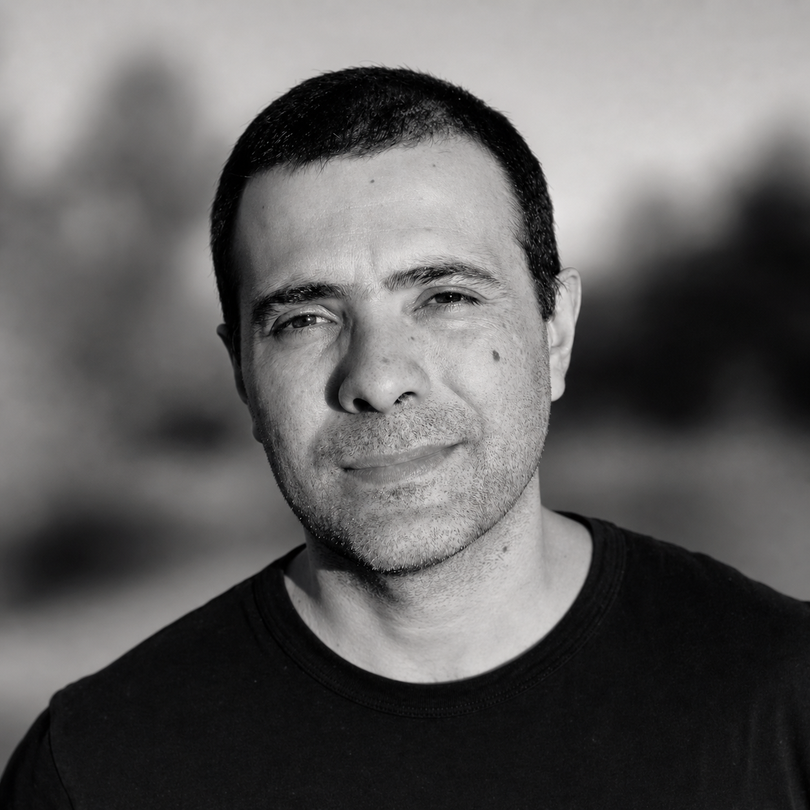

Nessa ordem, mais ou menos — dependendo da circunstância.

Sou Tailor Maciel — empreendedor, profissional B2B e entusiasta de ciência da computação vivendo em Caxias do Sul, Rio Grande do Sul. Também sou marido, pai, filho e alguém que gosta genuinamente da companhia de pessoas movidas por gratidão, colaboração e compromisso com resultados.
A aproximação com tecnologia não foi uma fuga de carreira. Foi uma extensão natural do que sempre fiz: entender como sistemas funcionam, encontrar ineficiências e construir algo melhor. Agora, parte disso acontece também com código.
Falo português, inglês e espanhol, o que sempre tornou o lado comercial do trabalho mais interessante do que uma operação apenas local.
Não uma virada brusca, mas um arco longo e deliberado.
Estou aberto a conversas sobre como dados, sistemas e tecnologia podem transformar operações e gerar impacto real.